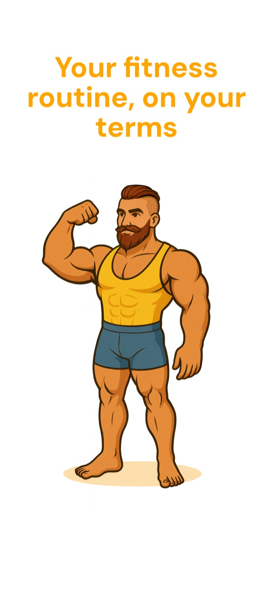
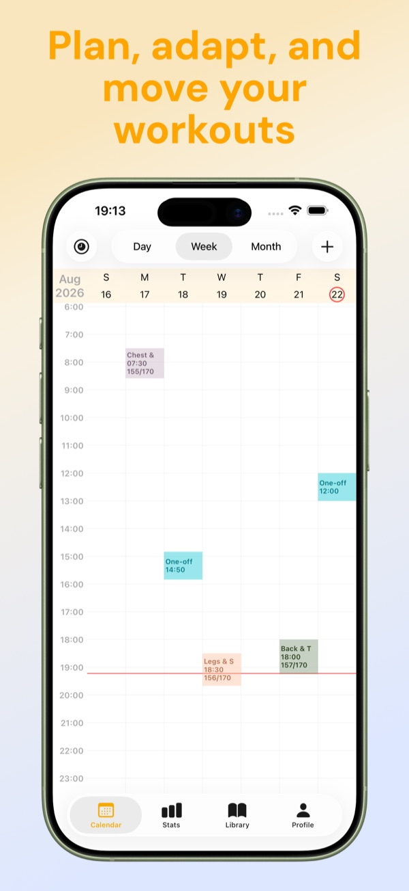
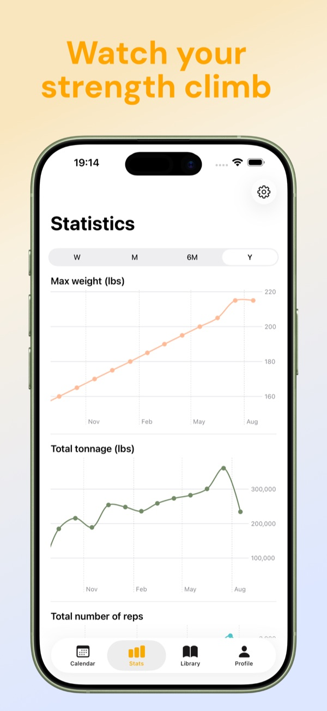
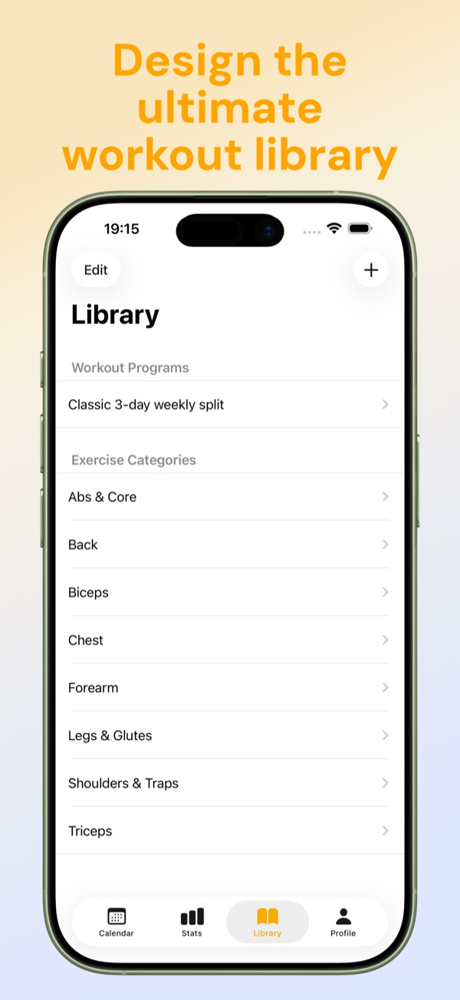
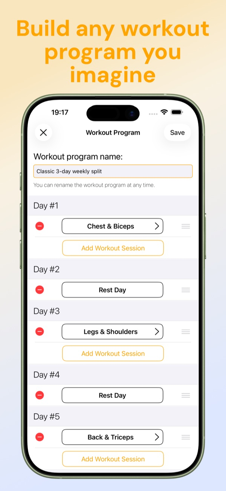

Golden Bicep
An iOS workout tracker. Log your sessions, track your body measurements, and watch your progress on beautiful charts.
Golden Bicep is a workout tracker for people who already know their way around a gym.
No beginner tutorials. No forced programs. No sign-up. No clutter. Just a fast, precise way to log your sessions, track your body, and see whether your training is actually working.





A calendar that makes sense
Your training lives on a real calendar, with Day, Week, and Month views that put every session at the time you actually train it. Move a workout to another day when life gets in the way. Drop in a one-off session without touching your program. See your whole week at a glance instead of scrolling through a list.
Your exercises, your programs
Build your own exercise library and assemble your own workout programs. Golden Bicep doesn’t tell you how to train — it stores your system, exactly the way you built it.
Charts worth opening
Log body measurements alongside your lifts, then let the charts do the work. Detailed enough to show real trends in your strength and your measurements, clean enough to read in seconds.
Track without a connection
There’s no sign-up, no login, and no password to forget — open the app and start logging. Your workouts and measurements are stored on your iPhone and never sent to us, so tracking keeps working in a basement gym with no bars.
Built for the gym floor
Quick to open, quick to fill in, quick to put away. Because the best tracker is the one you’re still using six months from now.